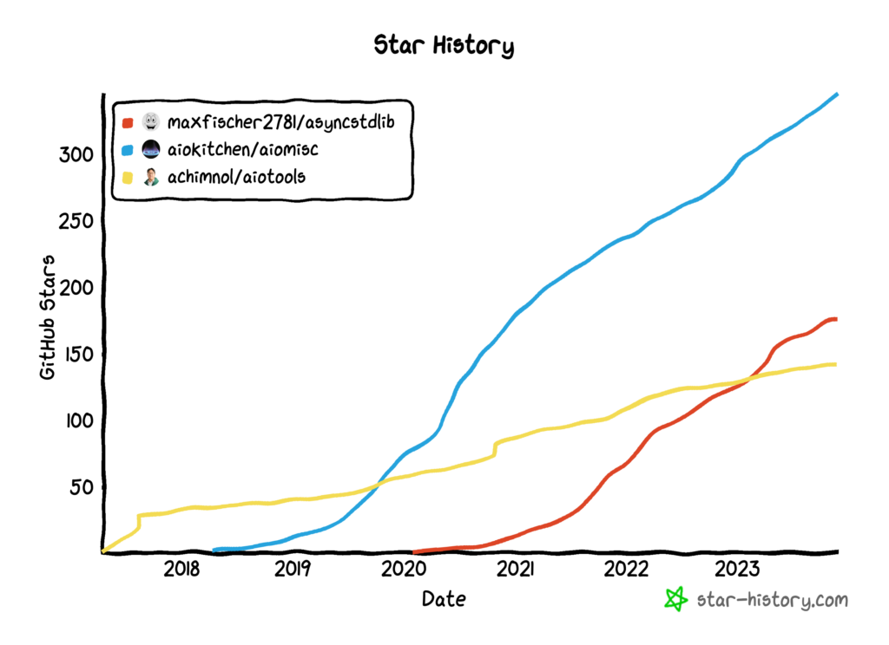

Asyncio Helper Libraries
We can use third-party Python libraries to help solve common problems and introduce new capabilities in asyncio programs.
Three popular third-party helper asyncio libraries include asyncstdlib, aiomisc, and aiotools.
Each provides different capabilities that may be helpful such as wrapping standard functions in the Python standard library to be awaitables, offering function decorators for running functions in new threads, to timer tasks.
In this tutorial, you will discover helper asyncio libraries in Python.
Let's get started.
Asyncio Helper Libraries
The asyncio module in the Python standard library does provide everything.
Often there are problems in asyncio programs that we need to solve over and over again.
We can solve these problems more effectively using a helper third-party library that solves it for us.
There are many general helper libraries for asyncio, although perhaps three of the more common helper libraries.
They are as follows:
- asyncstdlib: the missing toolbox for an async world
- aiomisc: miscellaneous utils for asyncio
- aiotaiotoolsools: Idiomatic asyncio utilities
Did I miss your preferred asyncio helper library?
Let me know in the comments below.
These libraries are not directly comparable, they offer different helper capabilities, but they can be grouped as they all attempt to augment asyncio in some general way.
We can review the GitHub star rating histories for these libraries, to get some idea of their longevity and popularity.
The histories show that aiotools may be older, although aiomisc has become popular followed closely by asyncstdlib.

Let's take a closer look at each in turn.
asyncstdlib Library
The asyncstdlib library was developed by Max Fischer.
The asyncstdlib library re-implements functions and classes of the Python standard library to make them compatible with async callables, iterables and context managers. It is fully agnostic to async event loops and seamlessly works with asyncio, third-party libraries such as trio, as well as any custom async event loop.
-- asyncstdlib GitHub Project.
It provides async-wrapped versions of a number of capabilities and modules in the Python standard library.
This includes:
- asyncstdlib.builtins
- asyncstdlib.functools
- asyncstdlib.contextlib
- asyncstdlib.itertools
- asyncstdlib.heapq
This is a subtle but powerful library.
On the surface, it allows us to develop asyncio programs that are closer to "async all the way down". We can replace many if not most of our regular Python code with awaitables.
The real power is that it allows many regular Python functions to be treated as an awaitable. Not really though, as it does not use threads under the covers to simulate asynchronous programming.
Instead, it allows regular built-in functions, functools, and itertools to be treated as awaitables. This is from a syntax and execution perspective, this is the capability unlocked by asyncstdlib.
In turn, this permits:
- Function calls to be treated as asyncio.Task objects.
- Cancellation of tasks.
- Use of timeouts.
- Use as part of asynchronous iterators and generators.
- Use as part of asynchronous context managers.
You don't need this capability until you do. Until you're trying to call a Python function when the API requires an awaitable.
Let's explore a simple example.
Firstly, install the asyncstdlib library using your preferred Python package manager such as pip.
For example:
pip install asyncstdlibNext, we can develop an example that treats a built-in function as an awaitable.
In this case, the sum() function is applied to a list.
We will define this operation as a task, and then await to acquire the result on demand.
The complete example is listed below.
# SuperFastPython.com
# example of wrapped built-in function with asyncstdlib
import asyncio
import asyncstdlib.builtins
# main coroutine
async def main():
# create a list
data = [1, 2, 3]
# create a task to calculate the sum
task = asyncio.create_task(asyncstdlib.builtins.sum(data))
# await the task and report the result
print(f'Result: {await task}')
# start the asyncio event loop
asyncio.run(main())
Running the example starts the asyncio event loop and runs our main() coroutine.
The complete creates a list of numbers. It then creates a task that calculates the sum of the list.
It does this using the asyncstdlib.builtins.sum() wrapped function that returns an awaitable.
The result of the task is then awaited and reported in a print statement. This suspends the main() coroutine and executes the sum() task, before resuming the main() coroutine and reporting the result.
Result: 6aiomisc Library
The aiomisc library is maintained by an organization called aiokitchen, although I suspect is driven by Mosquito.
The aiomisc library provides a collection of utilities for developing asyncio programs.
aiomisc is a Python library that provides a collection of utility functions and classes for working with asynchronous I/O in a more intuitive and efficient way. It is built on top of the asyncio library and is designed to make it easier for developers to write asynchronous code that is both reliable and scalable.
-- aiomisc GitHub Project.
This includes capabilities such as:
- aiomisc.Service for long-running services (comes with many implementations).
- aiomisc.entrypoint for hiding the startup boilerplate for asyncio programs.
- aiomisc.threaded and more decorators for running blocking functions a separate thread.
- aiomisc.WorkerPool for executing async tasks in a multiprocessing.Pool.
- aiomisc.CircuitBreaker for an async-compatible circuit breaker pattern.
- aiomisc.asyncbackoff for async-compatible retry with backoff of a target function.
And much more.
There's a lot of good stuff in this library, and I would encourage you to check the documentation:
Let's explore a simple example of one feature, using a decorator to run a task in a separate thread, instead of using asyncio.to_thread().
The first step is to install the library using your preferred package manager, such as pip.
For example:
pip install aiomiscNext, we can develop an example that uses the @aiomisc.threaded decorator.
In this case, we can define a regular Python function that reports a message, blocks the thread, and then reports a final message.
We can add the function decorator to this function to wrap it in a coroutine and execute the function in a worker thread.
# coroutine with a blocking function
@aiomisc.threaded
def blocking():
# report a message
print('Running blocking task...')
# block the thread
time.sleep(2)
# report a message
print('Blocking task done.')
We can then define another task that runs in the event loop and reports a message every half second.
# coroutine with a non blocking task
async def nonblocking():
# loop a few times
for i in range(6):
# report a message
print('>non-blocking task is running')
# suspend a moment
await asyncio.sleep(0.5)
Finally, the main() coroutine can await both tasks directly.
Note, our regular Python function can be treated directly like a coroutine.
# main coroutine
async def main():
# wait for these tasks to complete
await asyncio.gather(nonblocking(), blocking())
Tying this together, the complete example is listed below.
# SuperFastPython.com
# example of running a task in a thread with aiomisc
import asyncio
import time
import aiomisc
# blocking function
@aiomisc.threaded
def blocking():
# report a message
print('Running blocking task...')
# block the thread
time.sleep(2)
# report a message
print('Blocking task done.')
# coroutine with a non blocking task
async def nonblocking():
# loop a few times
for i in range(6):
# report a message
print('>non-blocking task is running')
# suspend a moment
await asyncio.sleep(0.5)
# main coroutine
async def main():
# wait for these tasks to complete
await asyncio.gather(nonblocking(), blocking())
# start the asyncio event loop
asyncio.run(main())
Running the example first starts the asyncio event loop and runs our main() coroutine.
The main() coroutine runs and creates both coroutines and waits for them to be done.
The blocking() function is wrapped in a coroutine and awaited. The content of the function is run in a separate worker thread so that it does not block the asyncio event loop.
The nonblocking() runs in the event loop and reports a message every half second.
Importantly, both tasks make progress concurrently, whereas if the blocking() was run directly in the same thread as the event loop, it would prevent the nonblocking() task from making progress.
Running blocking task...
>non-blocking task is running
>non-blocking task is running
>non-blocking task is running
>non-blocking task is running
Blocking task done.
>non-blocking task is running
>non-blocking task is runningaiotools Library
The aiotools library was developed by Joongi Kim.
Idiomatic asyncio utilties
-- aiotools GitHub Project.
Like aiomisc, it offers an eclectic collection of capabilities all in one library, such as:
- Async Context Manager
- Async Deferred Function Tools
- Async Fork
- Async Function Tools
- Async Itertools
- Multi-process Server
- Supervisor
- Task Group
And more.
Many of these capabilities were developed a long time ago, perhaps before they were added to the Python standard library in Python 3.7, 3.8 and Python 3.11.
Unlike aiomisc, the library has a disclaimer that it may not be considered stable.
NOTE: This project is under early stage of development. The public APIs may break version by version.
-- aiotools GitHub Project.
It is still actively developed and has modest adoption, so I'm not sure how much credence to put in this message.
We can explore a small example of one of the library features, in this case a timer.
The first step is to install the library using your preferred Python package manager, such as pip.
pip install aiotoolsThe aiotools library provides the aiotools.create_timer() function for running a periodicity background task on a timer.
It takes the name of a coroutine to execute and the time interval in seconds between executions.
We can define a simple action that simply prints a message.
# function executed in the timer
async def action(interval):
# report a message
print('Action!')
We can then create a timer task that triggers our target coroutine every 2 seconds.
...
# create and schedule the timer task
task = aiotools.create_timer(action, 2)The foreground of our program will then be a loop that reports a message every half second for 4 seconds.
...
# do things
for i in range(8):
# report a message
print('>main is running')
# suspend main
await asyncio.sleep(0.5)
Tying this together, the complete example is listed below.
# SuperFastPython.com
# example of a timer using aiotools
import asyncio
import aiotools
# function executed in the timer
async def action(interval):
# report a message
print('Action!')
# main coroutine
async def main():
# create and schedule the timer task
task = aiotools.create_timer(action, 2)
# allow the timer to start
await asyncio.sleep(0)
# do things
for i in range(8):
# report a message
print('>main is running')
# suspend main
await asyncio.sleep(0.5)
# start the asyncio event loop
asyncio.run(main())
Running the program starts the asyncio event loop and runs our main() coroutine.
The main() coroutine creates a timer task that runs our action() coroutine every 2 seconds.
The main() coroutine then suspends to allow this timer task to start.
The main() coroutine resumes and loops 8 times, reporting a message and sleeping for half a second.
This allows the timer to run and report a message about every 2 seconds, while the main() coroutine reports a message every half second or about a 4:1 ratio.
The main() coroutine runs and the event loop cancels the timer thread.
This highlights how we can use the aiotools library to run and manage a periodic timer task.
>main is running
Action!
>main is running
>main is running
>main is running
Action!
>main is running
>main is running
>main is running
>main is running
Action!Takeaways
You now know about helper asyncio libraries in Python.